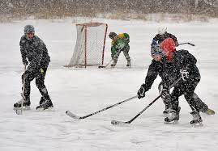

Shinny, que generalmente se cree que fue un precursor del hockey sobre hielo , era lo suficientemente informal en sus años de formación como para que los discos y los palos fueran a menudo improvisados. Durante la Gran Depresión, por ejemplo, los niños del norte usaban ramas de árboles o palos de escoba como palos, una lata, un trozo de madera e incluso una manzana de carretera congelada (excremento de caballo) como disco. Cualquier objeto del tamaño adecuado podría servir como disco. El nombre se deriva del juego escocés shinty y, de hecho, shinny era un nombre común para una de las muchas variaciones regionales de shinty en Escocia . Shinny, un término principalmente canadiense , generalmente se llama "hockey de recogida" o "hockey de estanque" en los Estados Unidos . En Canadá se perpetúa un mito de que el nombre se deriva de los niños que se atan los catálogos de Eaton alrededor de las piernas (especialmente los porteros) como un tipo improvisado de espinilleras.
Sorprendentemente, Shinny ha existido por más tiempo que el hockey con el que todos estamos familiarizados hoy. En lugar de una derivación del hockey, se cree que es el precursor. Si bien generalmente se acepta que el primer juego moderno de hockey sobre hielo se jugó en 1875, ¡hay referencias a shinny desde el siglo XVIII! Incluso hay referencias potenciales que se remontan a la década de 1600, aunque usan diferentes palabras para describir las actividades que se realizan y no queda muy claro a partir de los dibujos de estas actividades qué tan similares son realmente a shinny.

Se cree que el nombre shinny en sí mismo es una derivación de shinty, que es un juego escocés que se asemeja al hockey sobre césped. Dado que las primeras referencias a shinny provienen de las Islas Británicas, tiene sentido que esté influenciado por un popular juego local. Durante los últimos doscientos años, Shinny ha ampliado su esfera de influencia y ahora también se juega en todos los lugares donde se juega al hockey. Y aunque shinny ha pasado de ser un juego improvisado inicial de shinty jugado en un estanque congelado, a algo que juegan millones de personas de todas las edades en todo el mundo, lo único que siempre ha conservado es su informalidad. La principal diferencia entre shinny y hockey es la informalidad del juego y la falta general de reglamentación. Esto se significa por el hecho de que no hay árbitros. En Shinny, los jugadores deben gobernarse a sí mismos y determinar qué constituye el juego limpio como colectivo. Esta falta de reglas y árbitros formales es un resultado directo del origen del juego. Antes, cuando Shinny se jugaba principalmente en estanques congelados en lugar de en pistas oficiales, era mucho más difícil apegarse a un conjunto de reglas en particular. A menudo, no había límites bien definidos aparte del borde del estanque, los objetivos serían poco más que el espacio entre dos montones de nieve, y el equipo podría incluir cualquier cosa, incluso remotamente en forma de palo o disco. Esta es también la razón por la que no hay enfrentamientos en Shinny. Es difícil determinar cuándo algo está fuera de los límites o dónde se debe reanudar el juego cuando no hay límites. Los equipos a menudo se asignan al azar o al intentar dispersar la habilidad de los jugadores de manera uniforme en ambos lados. Tampoco son necesarias las posiciones en brillante, incluida la de portero. Sin embargo, muchas ligas optan por tener posiciones, o al menos porteros, porque ayuda a que el juego sea menos caótico y se asemeje más al hockey profesional. Pero a pesar de que las ligas brillantes pueden imitar al hockey profesional de alguna manera, son inherentemente diferentes cuando se trata de reglas relacionadas con la seguridad.

A primera vista, el mayor cambio de reglas entre el hockey y el shinny es la eliminación de los controles y la mayoría de las otras formas de contacto físico. Originalmente, incluso había reglas contra los slapshots que hacen que el disco abandone la superficie del hielo. Esto se debió al hecho de que no todos los jugadores usaban equipo de protección en los primeros días de Shinny, pero ahora los cascos y otras protecciones son comunes. Esta falta de protección al inicio de Shinny es también la razón por la que se originó como un deporte sin contacto. En el mundo actual, en el que cada vez más queremos que los deportes sean más seguros, es interesante pensar en cómo el hockey profesional en realidad aumentó el peligro que representa para los jugadores al agregar controles en el deporte. Pero si el hockey dio el salto para convertirse en un deporte de contacto, ¿por qué no brilló? La respuesta es bastante simple: lesionarse no es divertido. Shinny está destinado a ser una actividad recreativa que pueden disfrutar jugadores de todas las edades y niveles de habilidad, y la inclusión de contacto como pasar alteraría fundamentalmente ese principio básico. Sin embargo, la falta de contacto presente en Shinny no le resta valor al juego. Hay muchas otras formas de quitarle el disco al equipo contrario sin enviar a uno de sus jugadores a los tableros.

Shinny ha existido mucho más tiempo de lo que la mayoría de la gente cree. No es una versión informal del hockey, sino que el hockey es una versión formal de shinny. Desde sus humildes raíces como un derivado del shinty escocés, hasta la versión más regulada que juegan millones de personas en todo el mundo hoy en día, shinny se ha aferrado a su principio fundamental de ser un deporte en el que cualquiera puede participar en cualquier nivel. E incluso el hockey profesional ha sacado una página del libro de Shinny en los últimos años. Si bien sus partidos aún están altamente regulados, la NHL ha incorporado algunos juegos al aire libre en cada temporada desde 2008. Puede que no jueguen en estanques, pero parece que los lugares al aire libre se han beneficiado del factor nostálgico de Shinny como los tres más recientes. Los récords de asistencia de la NHL se establecieron durante estos partidos.